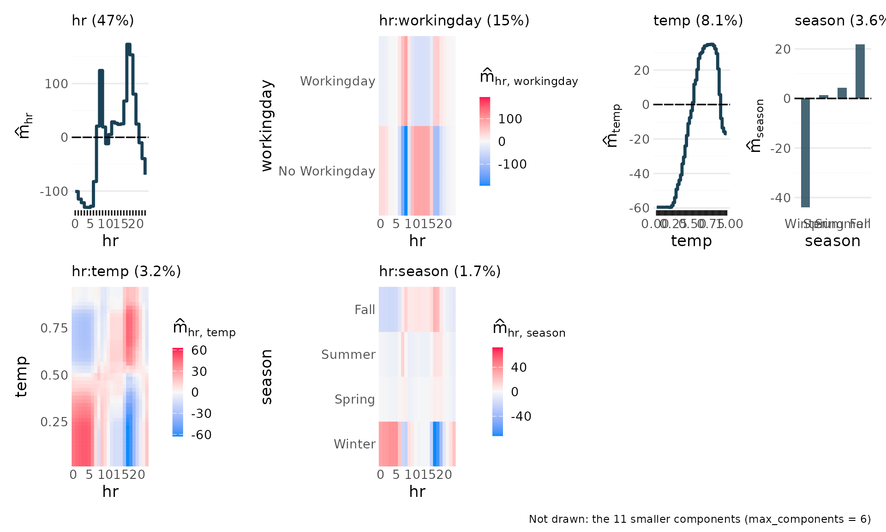
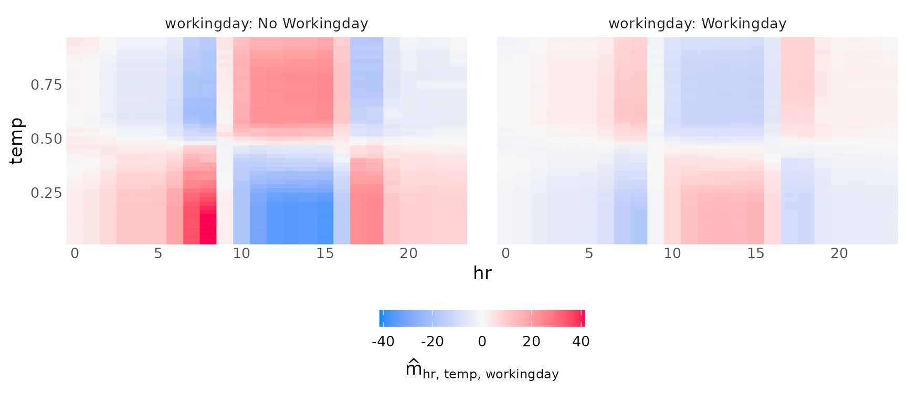
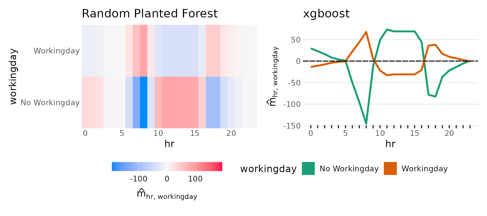
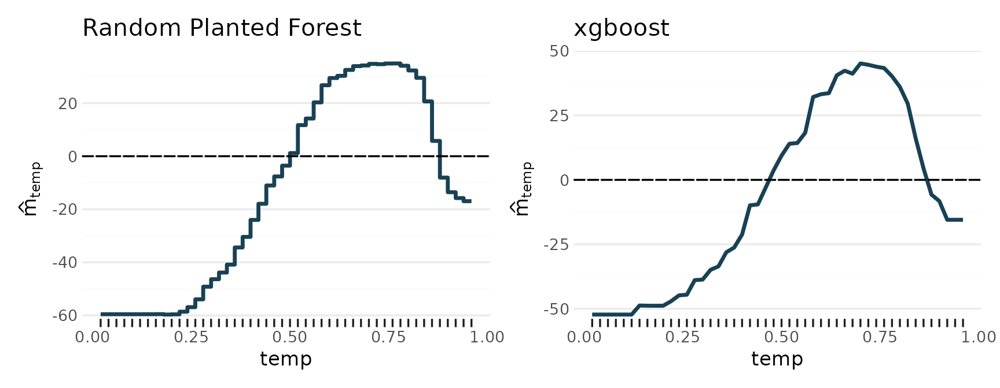
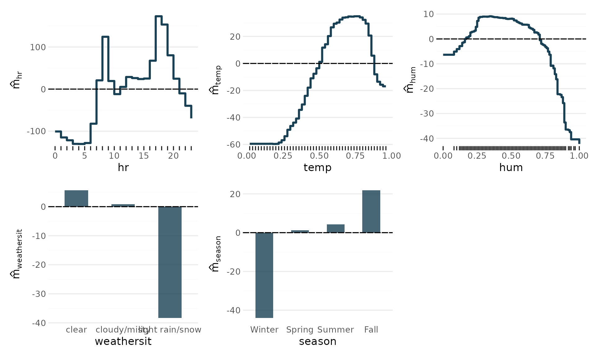
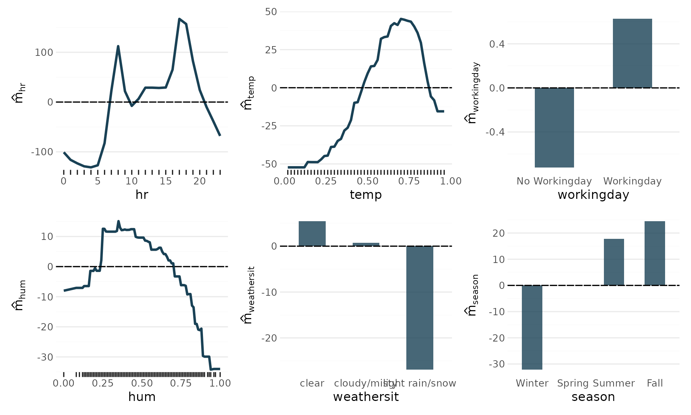
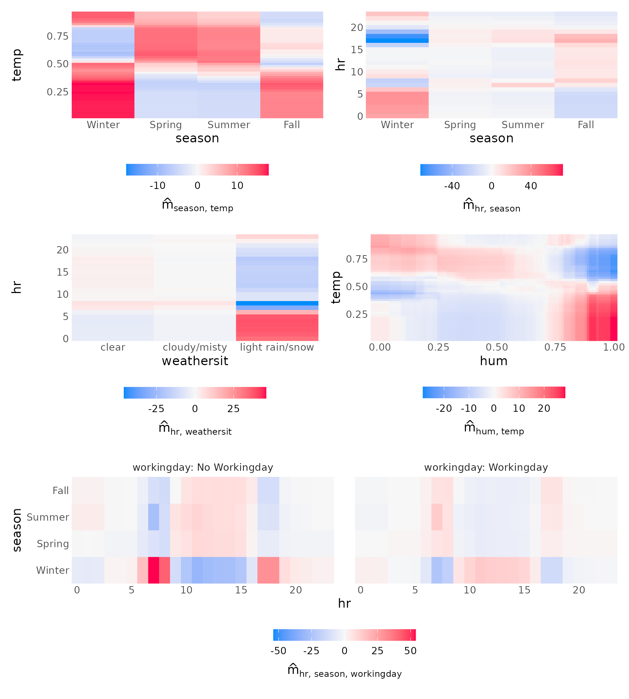
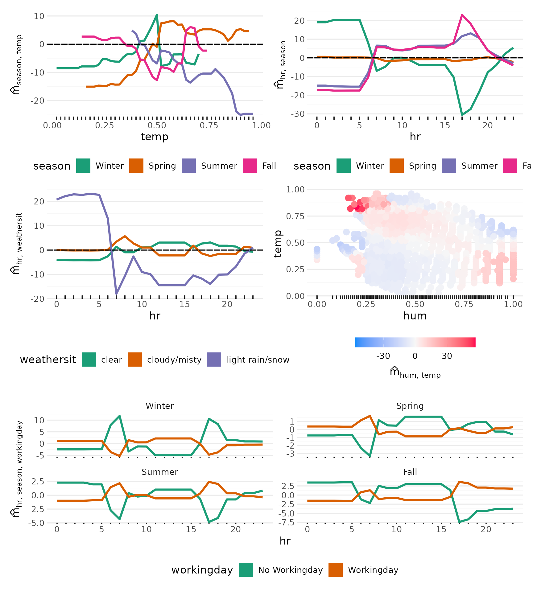

Bikesharing: One Decomposition, Two Model Types
Source:vignettes/articles/Bikesharing-Decomposition.Rmd
Bikesharing-Decomposition.Rmdglex() decomposes the predictions of a tree ensemble
into main effects and interaction terms of any order, and it does so for
Random Planted Forests and xgboost alike. This article
walks through the same analysis of the bikesharing data with both, so
you can see where the models agree, where they do not, and what each of
them needs from you before glex() is happy.
The model-specific parts live in tabs. Everything downstream of
glex() is identical.
library(glex)
library(data.table)
library(ggplot2)
library(patchwork) # To arrange plots
set.seed(2023)Preparing the Data
The bike data shipped with glex is a
lightly recoded version of the Bikeshare data in the
ISLR2 package, which provides the dataset published at the
UCI
Machine Learning Repository.
This data set contains the hourly and daily count of rental bikes between years 2011 and 2012 in Capital bikeshare system, along with weather and seasonal information.
The outcome is bikers, the total number of bikers in the
system. The predictors of interest are
-
hr: Hour of day, 0 to 23 hours. -
temp: Normalized temperature in Celsius. -
workingday: Whether it is a work day or not. -
hum: Normalized humidity. -
weathersit: Weather situation, fromcleartolight rain/snow. -
season: Winter, Spring, Summer, Fall.
data(bike, package = "glex")
# Only one observation with this condition, removing it to make space.
bike <- bike[weathersit != "heavy rain/snow", ]
bike[, weathersit := droplevels(weathersit)]
vars <- c("hr", "temp", "workingday", "hum", "weathersit", "season")
x <- as.data.frame(bike[, ..vars])
str(x)
#> 'data.frame': 8644 obs. of 6 variables:
#> $ hr : num 0 1 2 3 4 5 6 7 8 9 ...
#> $ temp : num 0.24 0.22 0.22 0.24 0.24 0.24 0.22 0.2 0.24 0.32 ...
#> $ workingday: Factor w/ 2 levels "No Workingday",..: 1 1 1 1 1 1 1 1 1 1 ...
#> $ hum : num 0.81 0.8 0.8 0.75 0.75 0.75 0.8 0.86 0.75 0.76 ...
#> $ weathersit: Factor w/ 3 levels "clear","cloudy/misty",..: 1 1 1 1 1 2 1 1 1 1 ...
#> $ season : Factor w/ 4 levels "Winter","Spring",..: 1 1 1 1 1 1 1 1 1 1 ...workingday, weathersit and
season are factors, which both model types take as they
are.
Fitting the Models
Each tab fits one model, hands it to glex() and stores
the result in components. With the settings below, fitting
and decomposing both takes about a minute in total.
We limit the model’s complexity with
max_interaction = 3, as we are only going to visualize
interactions up to the third degree, and a higher value would only
marginally improve predictive performance at the cost of a longer
runtime. A model with 50 tree families suffices here. rpf()
fits the forest and keeps the few of its components that matter, each
refitted with one coefficient (see
randomPlantedForest::prune_components()). These components
are the model, so glex() takes them as they are.
library(randomPlantedForest)
rp <- rpf(
bikers ~ hr + temp + workingday + hum + weathersit + season,
data = bike,
max_interaction = 3,
n_families = 50,
n_splits = 100,
share_candidates = 0.9,
n_try_split_points = 5
)
components$rpf <- glex(rp, bike)Having few components, the model can be drawn whole:
plot() without predictors shows its components as the model
predicts with them, the largest first, each titled by its share of the
variance of the prediction; max_components keeps the plot
to the largest.
plot(components$rpf, max_components = 6)
Since xgboost 3.0, a data.frame with factor
columns is accepted directly and the trees split on sets of levels, so
no dummy encoding is needed. glex() reads those categorical
splits and keeps the factors for plotting; pass the same
data.frame to both. The interaction order is determined by
max_depth.
The parameters below are placeholders. Replace them with tuned values.
What glex() Returns
Every glex object holds the decomposition m
(one column per term), the SHAP values derived from it and the data
x used for plotting. The number of terms differs by model:
for xgboost a term exists for every feature subset the
model splits on together, for the Random Planted Forest only for the
components it keeps:
Variable importances summarize the average absolute contribution of each term. Here are the top terms per model:
lapply(components, function(gl) head(glex_vi(gl), 6))
#> $rpf
#> degree term m m_rel
#> <int> <char> <num> <num>
#> 1: 1 hr 70.84490 0.5022735
#> 2: 2 hr:workingday 34.21013 0.2425416
#> 3: 1 temp 32.75844 0.2322495
#> 4: 2 hr:temp 17.69695 0.1254671
#> 5: 1 season 17.36409 0.1231073
#> 6: 1 hum 11.78024 0.0835191
#>
#> $xgboost
#> degree term m m_rel
#> <int> <char> <num> <num>
#> 1: 1 hr 70.73483 0.4918541
#> 2: 1 temp 31.71445 0.2205262
#> 3: 2 hr:workingday 28.09030 0.1953257
#> 4: 2 hr:temp 18.54844 0.1289764
#> 5: 1 season 18.39189 0.1278879
#> 6: 1 hum 11.54984 0.0803117From here on, every section applies the same code to each model. The helper below prints one tab per model.
3-Way Interaction
The Random Planted Forest’s component of three predictors is drawn as heat maps over two of them, one per cell of the third.


Side by Side
The tabs make it easy to inspect one model at a time. To compare
them, the same term from both models goes into one figure. The
hr by workingday interaction is the most
striking one in this data: on working days the commuting peaks appear,
on other days the afternoon dominates.
wrap_plots(
lapply(names(components), function(model) {
plot_twoway_effects(components[[model]], c("hr", "workingday")) +
ggtitle(labels[[model]])
}),
guides = "collect"
) & theme(legend.position = "bottom")
The same for the temp main effect, where the smoothness
of the two model types differs the most:
wrap_plots(lapply(names(components), function(model) {
plot_main_effect(components[[model]], "temp") + ggtitle(labels[[model]])
}))
Additional Effects
All main effects, by iterating over the predictors in
vars (hr, temp, workingday, hum, weathersit, season) that
have one and collecting the plots with
patchwork::wrap_plots(). The Random Planted Forest has no
main effect of workingday: in it, working days matter only
through interactions, above all the one with the hour.


More Interactions
plot() passes its arguments on to the specialized
plot_* functions, depending on the number of predictors
supplied. Third degree interactions can be tricky to interpret, if they
have any effect at all.

